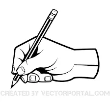

Bem-vindo ao Meu Aumigo
Somos a ONG Meu Aumigo, localizados em Londrina-PR, dedicados a ajudar cachorrinhos abandonados a encontrarem um lar cheio de amor e carinho.
Cada Aumigo que chega até nós merece atenção, cuidado e uma família que o acolha para sempre
Missão:Levar amor e esperança a animais abandonados, promovendo adoção responsável e conscientização sobre o cuidado com os pets.
Visão:Um mundo onde todo animal tenha um lar cheio de carinho.
Valores:Amor, responsabilidade, respeito e compaixão pelos animais.
Clique aqui para conhecer nossos projetos.
Clique aqui para fazer seu cadastro e participar.
Aviso: Este site está em desenvolvimento para fins de estudo.